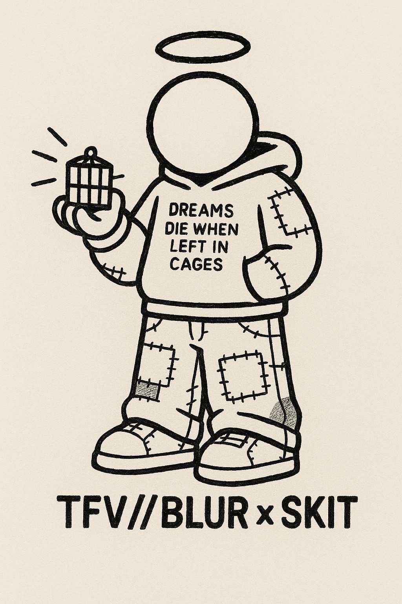

AN UNOFFICIAL RECORD OF PUBLIC THOUGHTAUTHOR UNKNOWN / NL
A CITY FULL OF NOISE. ONE THOUGHT CAN CUT THROUGH IT.
THE CITY
IS MY CANVAS/
YOUR MIND
IS THE TARGET.
Small interventions.
Unexpected places.
Thoughts that follow you home.
TFV
//
BLUR
ENTER THE ARCHIVE
//
BLUR
FIG. 00 — THE BEGINNING IS EVERYWHERE
00 — THE IDEANO FACE. NO BIOGRAPHY.
NOT MADE
TO BE SCROLLED.
Made to interrupt the ordinary.
A sentence on the way to the train. A question beside a familiar route. Something you weren't looking for — but might keep thinking about.
TFV//BLUR stays out of frame. The work is what matters. The rest is yours to interpret.
— IDENTITY WITHHELD01 — DOCUMENTED TRACESTHE ARCHIVE IS NEVER COMPLETE
THE
AFTERIMAGE.
07FRAGMENTS
ON RECORD
ON RECORD
A growing record of things left behind. Each image is a trace.
END OF VISIBLE RECORDTHE NEXT TRACE MAY ALREADY EXIST ↗
02 — A SMALL INTERRUPTION
LOOK
CLOSER.
THE WALL IS ONLY THE BEGINNING.TFV//BLUR
03 — SIDE NOTETFV//BLUR × SKIT
A CHARACTER WITHOUT A FACE.
DREAMS DIE
WHEN LEFT
IN CAGES.
A recurring figure from the same universe. A sketch, a symbol, a reminder.
FIG. 01 / SKIT
NOW GO
NOTICE.
THE CITY HAS BEEN TALKING THE WHOLE TIME.